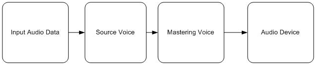

The minimum requirement for enabling XAudio2 to play audio data is an audio processing graph, which is constructed from a single mastering voice and a single source voice.
Initialize the XAudio2 engine by following the steps described in How to: Initialize XAudio2.
Populate a WAVEFORMATEX and XAUDIO2_BUFFER structure by following the steps described in How to: Load Audio Data Files in XAudio2.
Create a source voice using the CreateSourceVoice function.
When you specify NULL for the pSendList argument of CreateSourceVoice, the source voice's output goes to the mastering voice created in step 1.
IXAudio2SourceVoice* pSourceVoice;
if( FAILED(hr = pXAudio2->CreateSourceVoice( &pSourceVoice, (WAVEFORMATEX*)&wfx,
0, XAUDIO2_DEFAULT_FREQ_RATIO, NULL, NULL, NULL ) ) ) return hr;
After you finish this step, there is a simple audio graph consisting of the source voice, the mastering voice, and the audio device. The remaining steps in this how-to topic show you how to start audio data flowing through the graph.
A simple audio graph

Use the function SubmitSourceBuffer to submit an XAUDIO2_BUFFER to the source voice.
if( FAILED(hr = pSourceVoice->SubmitSourceBuffer( &buffer ) ) )
return hr;
Use the Start function to start the source voice.
if ( FAILED(hr = pSourceVoice->Start( 0, XAUDIO2_COMMIT_NOW ) ) )
return hr;
Â
Â